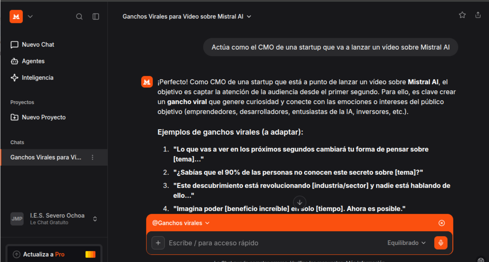

Sesión 3: Laboratorio de temperatura, top‑p, prompts y Flask
Esta sesión complementa LLM02 con un laboratorio práctico de parámetros y diseño de prompts, usando el mismo entorno Python/Flask y la misma API de Mistral que hemos configurado en las sesiones anteriores.
El enfoque está pensado para hacer en clase, en ejercicios cortos, sin pedir memorias ni documentos extensos.
Imagen:

1. Objetivos de la sesión 2.5
Al finalizar esta sesión, el alumnado será capaz de:
- Ajustar la temperatura del modelo y observar su efecto en tareas de programación y de creatividad.
- Ajustar el parámetro top-p manteniendo fija la temperatura, para ver cómo cambia la variabilidad de la salida.
- Mejorar prompts mediante principios básicos de ingeniería de prompts (rol, tarea, restricciones, formato).
- Integrar varios modos de comportamiento en una miniwebapp Flask (perfiles “agénticos”).
2. Requisitos previos
El alumnado debe tener:
- Python y un entorno virtual configurado.
- Clave de API de Mistral en la variable
MISTRAL_API_KEY. -
Proyecto Flask básico (similar al de la práctica “Crear una webapp con Flask”):
-
app.py utilities.py.envtemplates/home.html
3. Práctica 1 – Temperatura: ayudante de código vs generador de posts
3.1. Idea
Usar el mismo modelo para dos tareas distintas:
- Ayudante de código (respuestas estables y precisas).
- Generador de posts para redes sociales (respuestas creativas y variadas).
3.2. Código base
Crea un archivo temp_demo.py con:
from mistralai import Mistral
import os
client = Mistral(api_key=os.getenv("MISTRAL_API_KEY", "").strip())
def llamar_llm(prompt: str, system_prompt: str, temperature: float):
messages = [
{"role": "system", "content": system_prompt},
{"role": "user", "content": prompt}
]
resp = client.chat.complete(
model="mistral-medium-latest",
messages=messages,
temperature=temperature
)
print(f"\n--- temperature={temperature} ---\n")
print(resp.choices.message.content)
prompt_code = """Explica qué hace este código Flask:
@app.route('/')
def home():
return 'Hola mundo'
"""
prompt_posts = "Genera 5 ideas de posts para redes sociales para promocionar una miniwebapp hecha con Flask."
system_code = "Eres un ayudante de programación especializado en Flask. Responde con precisión y brevedad en castellano."
system_social = "Eres un copywriter creativo para redes sociales. Responde en castellano con ideas variadas y atractivas."
if __name__ == "__main__":
# Ayudante de código
llamar_llm(prompt_code, system_code, 0.1)
llamar_llm(prompt_code, system_code, 0.9)
# Generador de posts
llamar_llm(prompt_posts, system_social, 0.1)
llamar_llm(prompt_posts, system_social, 0.9)
3.3. Tareas del alumnado
- Ejecutar
python temp_demo.py. -
Comparar las 4 salidas:
-
código con temperatura baja,
- código con temperatura alta,
- posts con temperatura baja,
- posts con temperatura alta.
-
Comentar en voz alta:
-
¿Qué configuración usarías para un ayudante de código?
- ¿Qué configuración usarías para generar ideas de posts?
4. Práctica 2 – Experimentando con top‑p
4.1. Idea
Mantener la temperatura fija y cambiar solo top_p para ver cómo afecta al grado de “exploración” en la generación.
4.2. Código base
Crea top_p_demo.py:
from mistralai import Mistral
import os
client = Mistral(api_key=os.getenv("MISTRAL_API_KEY", "").strip())
prompt = "Escribe una descripción breve y atractiva de una webapp Flask que usa un agente LLM como tutor de programación."
system_prompt = "Eres un asistente que redacta textos claros en castellano."
if __name__ == "__main__":
for p in [0.2, 0.5, 0.95]:
resp = client.chat.complete(
model="mistral-medium-latest",
messages=[
{"role": "system", "content": system_prompt},
{"role": "user", "content": prompt}
],
temperature=0.7,
top_p=p
)
print(f"\n=== top_p={p} ===\n")
print(resp.choices.message.content)
4.3. Tareas del alumnado
- Ejecutar
python top_p_demo.py. - Observar las diferencias entre
top_p=0.2,0.5y0.95. -
Comentar brevemente (en voz alta):
-
¿Con qué valor el texto parece más conservador?
- ¿Con cuál salen ideas más “locas” o inesperadas?
5. Práctica 3 – Mini ingeniería de prompts
5.1. Idea
Mostrar que cambiar el prompt (rol, público, formato) puede tener tanto impacto como cambiar los parámetros de muestreo.
5.2. Prompts de ejemplo
Usa una temperatura fija, por ejemplo temperature=0.3, y ve cambiando el system prompt.
Prompt 1 – genérico
Explícame Flask.
Prompt 2 – adaptado a estudiantes de FP
Actúa como profesor de informática para estudiantes de FP superior.
Explica qué es Flask en un máximo de 5 frases.
Responde en castellano y pon un ejemplo sencillo.
Prompt 3 – con formato estructurado
Actúa como un ayudante de programación especializado en Flask.
Tu usuario es un estudiante de FP superior.
Explica qué hace Flask y para qué se usa.
Responde con este formato:
1. Definición
2. Para qué sirve
3. Ejemplo mínimo
4. Error común de principiante
5.3. Ejercicio en clase
- Probar los tres prompts con la misma configuración de parámetros.
-
Comparar:
-
claridad,
- adecuación al público,
- organización de la respuesta.
- Extender el ejercicio cambiando solo el perfil del destinatario (FP, junior, profesor) y ver cómo adaptarías el prompt.
6. Práctica 4 – Integrar modos “agénticos” en la webapp Flask
En el PDF previo ya hemos creado una webapp Flask que llama a Mistral desde un módulo de utilidades.
Ahora convertimos esa app en una pequeña “Flask LLM Studio” con varios modos de uso.
6.1. Idea general
La webapp ofrecerá tres modos:
code_helper: ayudante de programación (baja temperatura).social_post: generador de posts para redes sociales (alta temperatura).free_play: modo libre en el que el alumno puede tocar temperatura y top‑p.
6.2. utilities.py
Ejemplo de módulo de utilidades:
import os
from mistralai import Mistral
from dotenv import load_dotenv
load_dotenv()
client = Mistral(api_key=os.getenv("MISTRAL_API_KEY", "").strip())
AGENTS = {
"code_helper": {
"system_prompt": (
"Eres un ayudante de programación experto en Flask. "
"Explicas código de forma clara, precisa y breve para estudiantes de FP superior."
),
"temperature": 0.2,
"top_p": 1.0
},
"social_post": {
"system_prompt": (
"Eres un generador de contenido creativo para redes sociales. "
"Escribe textos atractivos, variados y en castellano."
),
"temperature": 0.8,
"top_p": 1.0
},
"free_play": {
"system_prompt": "Eres un asistente general. Responde de forma útil y clara en castellano.",
"temperature": 0.5,
"top_p": 1.0
}
}
def generar_respuesta(modo, prompt_usuario, temperature=None, top_p=None):
config = AGENTS.get(modo, AGENTS["code_helper"])
temp = config["temperature"] if temperature is None else float(temperature)
p = config["top_p"] if top_p is None else float(top_p)
response = client.chat.complete(
model="mistral-medium-latest",
messages=[
{"role": "system", "content": config["system_prompt"]},
{"role": "user", "content": prompt_usuario}
],
temperature=temp,
top_p=p
)
return response.choices.message.content
6.3. app.py
Ejemplo de backend Flask:
from flask import Flask, render_template, request
from utilities import generar_respuesta
app = Flask(__name__)
@app.route("/", methods=["GET"])
def home():
return render_template("home.html")
@app.route("/generar", methods=["POST"])
def generar():
prompt = request.form.get("prompt", "")
modo = request.form.get("modo", "code_helper")
temperature = request.form.get("temperature", "").strip()
top_p = request.form.get("top_p", "").strip()
temperature = None if temperature == "" else float(temperature)
top_p = None if top_p == "" else float(top_p)
salida = generar_respuesta(modo, prompt, temperature, top_p)
return render_template(
"home.html",
salida=salida,
prompt=prompt,
modo=modo,
temperature=temperature if temperature is not None else "",
top_p=top_p if top_p is not None else ""
)
if __name__ == "__main__":
app.run(debug=True)
6.4. home.html (plantilla básica)
<!DOCTYPE html>
<html lang="es">
<head>
<meta charset="UTF-8">
<title>Flask LLM Studio</title>
</head>
<body>
<h1>Flask LLM Studio</h1>
<form action="/generar" method="post">
<label for="modo">Modo:</label>
<select name="modo" id="modo">
<option value="code_helper">Ayudante de código</option>
<option value="social_post">Generador de posts</option>
<option value="free_play">Experimento libre</option>
</select>
<br><br>
<label for="prompt">Prompt:</label><br>
<textarea name="prompt" id="prompt" rows="10" cols="80">{{ prompt or '' }}</textarea>
<br><br>
<label for="temperature">Temperature:</label>
<input type="number" step="0.1" min="0" max="1.5" name="temperature" id="temperature" value="{{ temperature or '' }}">
<label for="top_p">Top-p:</label>
<input type="number" step="0.05" min="0" max="1" name="top_p" id="top_p" value="{{ top_p or '' }}">
<br><br>
<button type="submit">Generar</button>
</form>
{% if salida %}
<hr>
<h2>Salida</h2>
<pre>{{ salida }}</pre>
{% endif %}
</body>
</html>
6.5. Tareas del alumnado en esta práctica
En clase, los alumnos deben:
- Lanzar la webapp con
python app.py. -
Probar el mismo prompt en:
-
modo
code_helper, - modo
social_post. - Observar cómo cambian el tono y el estilo.
- Usar el modo
free_playpara experimentar con distintas combinaciones de temperatura y top‑p (idealmente, cambiando solo uno cada vez).
7. Cierre de la sesión 2.5
Para cerrar la sesión (5 minutos), plantea estas preguntas en formato debate rápido:
- ¿Qué modo os ha resultado más útil para entender código?
- ¿Qué ha cambiado más la respuesta: el prompt o los parámetros de muestreo?
- ¿Os parece que estos “modos” ya se parecen a distintos agentes especializados dentro de una misma aplicación?
La idea que queremos que se lleven es que una aplicación LLM no es solo un prompt suelto: - combina un modelo, - parámetros de muestreo, - diseño de prompts, - y una interfaz (en este caso Flask) que expone distintos comportamientos “agénticos” para tareas concretas.